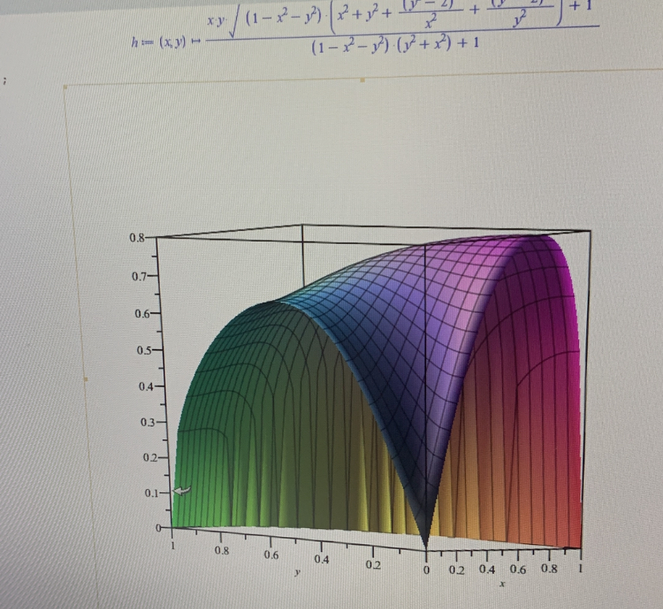
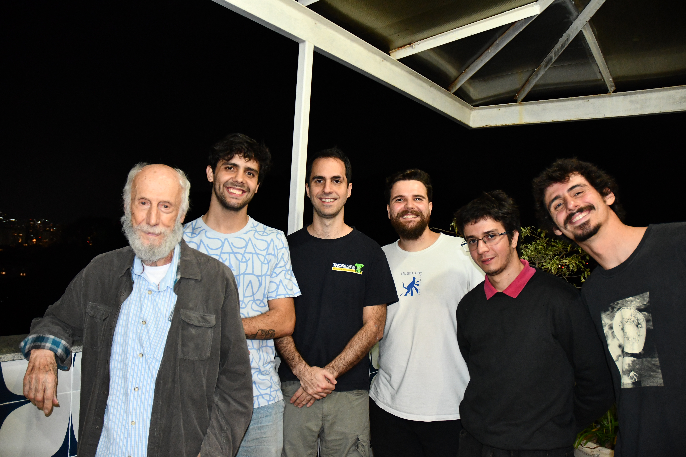

My Masters dissertation (Under the supervision of Carlos Tomei).
Some coding: algorithms for retrieving tridiagonal symmetric matrices from spectral data.
Introduction to Toda lattices at IMPA.
Random Matrices, Graphs and a combinatorial proof of Wigner's Semi-Circle Law at PUC-Rio. Slides
Poisson 2026 in Belgium. Group photo
Carlos Tomei 70 in Rio de Janeiro. Group photo
X Workshop on Conservative Dynamics and Symplectic Geometry in Rio de Janeiro. Group photo

